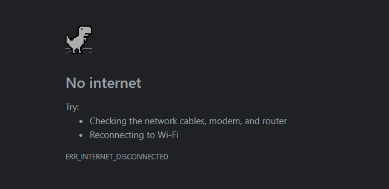

A. Pengertian DDOS
DDOS adalah kepanjangan dari Denial Down Of Server yang biasa digunakan untuk membuat sebuah halaman situs web itu down atau tidak dapat dibuka karena buffering terus menerus sehingga tidak dapat lagi diakses
B. Cara Menggunakan DDOS
cara menggunakan DDOS cukuplah mudah, akan tetapi ada syaratnya untuk melakukan ddos yaitu anda harus dapat menemukan ip addreas dan portnya, bagaimana cara menemuakannya? cukup anda temukan link yang anda akan serang lalu pada bagian luar link anda tinggal kilk kana lalu open source atau shortcut f6. Anda juga bisa menemukanya juga di link who.is atau klik aja ini disini
C. Cara Kerja DDOS
cara kerja DDOS adalah dia akan menerima entah berapa jumlahnya pasti banyak dan beruntun yang bersifat menghabiskan sumber daya dari laman web tersebut, tujuan melakukan DDOS adalah membuat suatu web itu down atau tidak dapat diakses karena habinya sumber daya dari laman web tersebut
D. Aplikasi yang digunakan untuk melakukan DDOS
untuk android bisa menggunakan Loic,dan Garuda DDOS, kalau di pc bisa menggunakan terminal dan cmd selagi diserangnya rame rame pasti down dalam hitugan jam
D. Dampak Dari DDOS
dampaknya adalah website akan mengalami buffering terus menerus diakibatkan kehabisan sumber daya karena diserap oleh beberapa jaringan dengan bandwith yang besar
F. Cara Mengatasi DDOS
bagaimana cara mengatasi DDOS?? jika website anda terkena ddos pasti anda sangat khawatir bukan? karena itu hak akses saya terbatas karena sumber daya dari website tersebubut habis, padahal anda bisa mngelola lagi website anda karena bug, cara mengatasinya cukup mudah anda cukup perlu merefresh ulang website anda atau anda bmengubah domain agar menjadi lebih baru lagi akan tetapi data yang ada dilamnya akan tetap ada meskipun mempunyai domain yang baru
note: jika anda melakukan halini pastikan anda terkoneksi dengan internet jika tidak maka anda akan menemui hal yang seprti ini
Apakah website ini membantu?